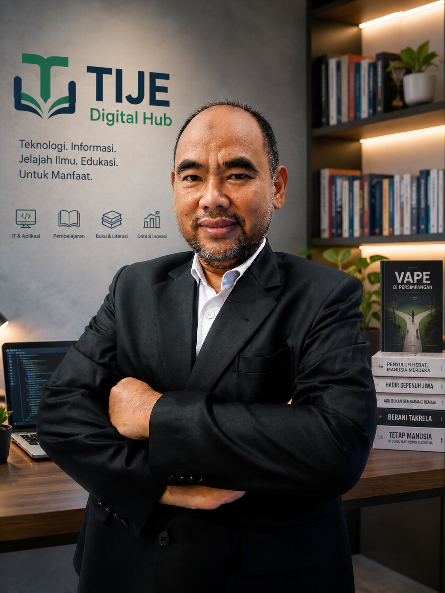
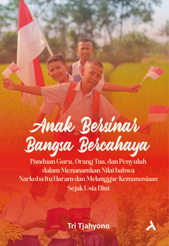
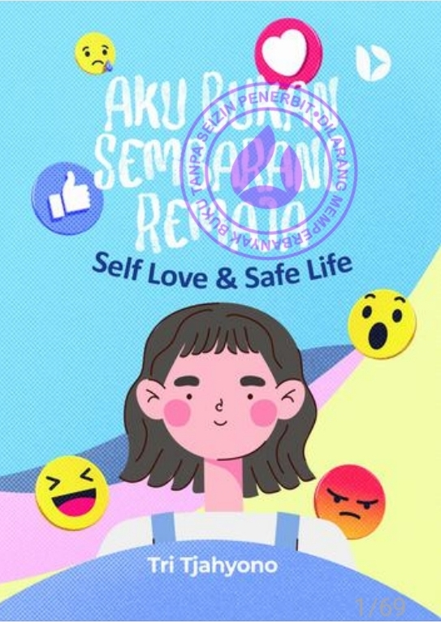
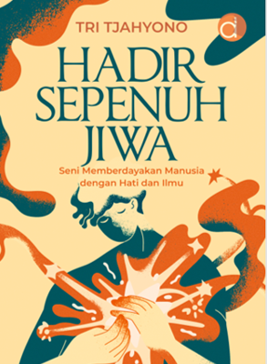
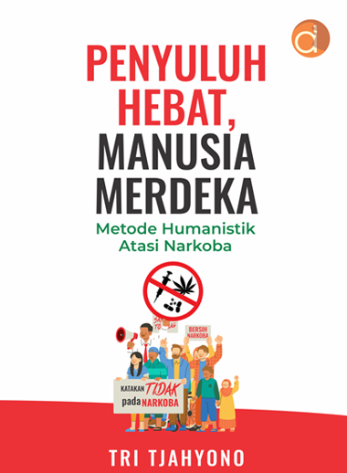
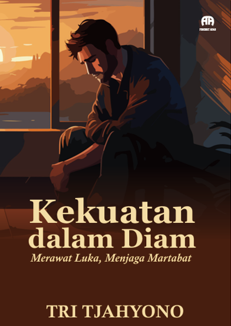
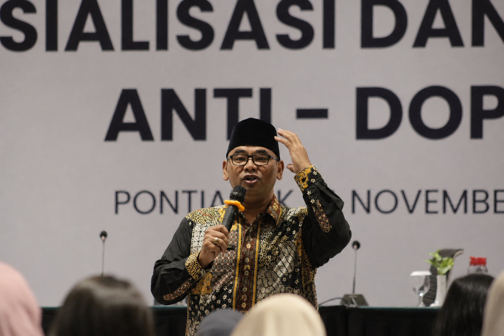

Knowledge
Buku, artikel, materi, dan gagasan yang dapat dipelajari serta dikembangkan.
Ruang digital yang menghubungkan buku, aplikasi, pembelajaran, data, insight, dan inovasi untuk mendukung pengembangan manusia.

MyTije menghimpun karya tulis, aplikasi, media pembelajaran, dan inisiatif pengembangan manusia dalam satu ekosistem yang rapi dan mudah dijelajahi.
Buku, artikel, materi, dan gagasan yang dapat dipelajari serta dikembangkan.
Pelatihan, refleksi, konseling, dan pembelajaran untuk pengembangan manusia.
Aplikasi dan sistem digital untuk membantu pembelajaran, pelayanan, dan pengelolaan data.
Inovasi yang dirancang agar pengetahuan hadir sebagai manfaat bagi masyarakat.
Aplikasi publik dapat langsung digunakan. Produk internal tetap diperkenalkan sebagai bagian dari portofolio tanpa membuka akses pengelolaannya.
Katalog buku dan karya tulis tentang manusia, pendidikan, sosial, dan perubahan.
Jelajahi buku ↗Ruang refleksi untuk mengenali ketahanan diri, mengelola tekanan, dan berani mencari bantuan.
Mulai refleksi ↗Kumpulan kuis dan media interaktif untuk membantu remaja mengenali diri dan kekuatannya.
Buka hub ↗Layanan psikologi, konsultasi, asesmen, pelatihan, dan pengembangan manusia.
Kunjungi beingpsikologi.com ↗Sistem pembelajaran, kelas, jadwal, materi, pembayaran, dan layanan siswa.
Pendamping target hafalan, murojaah, audio ayat, dan catatan perkembangan.
Pencatatan kegiatan, dokumentasi, laporan, dan rekam aktivitas profesional.
Visualisasi spasial wilayah, lokasi layanan, dan informasi kerawanan berbasis data.
Dashboard pribadi untuk obat, hasil laboratorium, tensi, berat badan, dan aktivitas fisik.
Platform inspirasi data, tren isu, generator ide, dan pengembangan materi berbasis AI.
Buku menjadi ruang untuk menyusun pengalaman, data, refleksi, dan gagasan agar dapat terus dibaca serta memberi manfaat melampaui waktu.
Lihat seluruh buku




Tulisan, refleksi, pengalaman, dan pembelajaran yang tidak berhenti sebagai status media sosial.
Ruang untuk pemikiran singkat, aktivitas, dan hal-hal kecil yang ingin tetap tersimpan.
Program dirancang untuk memperkuat pengetahuan, kesadaran, keterampilan, dan kemampuan bertindak dalam kehidupan nyata.
Pelatihan interaktif untuk organisasi, komunitas, sekolah, dan lingkungan kerja.
Rangkaian pembelajaran tematik yang sistematis, relevan, dan dapat diterapkan.
Pendampingan yang menghargai martabat, pilihan, dan proses pertumbuhan individu.
Penguatan kapasitas masyarakat melalui partisipasi, kolaborasi, dan inovasi sosial.
“Pengetahuan menjadi lebih bermakna ketika diubah menjadi karya, dan karya menjadi lebih bernilai ketika memberi manfaat bagi sesama.”— Tri Tjahyono

Sosiolog • Penulis • Trainer • Konselor • Digital Developer
Berpengalaman dalam pengembangan manusia, edukasi sosial, pelatihan, konseling, penulisan, serta pengembangan aplikasi digital yang mendukung pembelajaran dan pelayanan.
Melalui MyTije Digital Hub, karya-karya tersebut dihimpun dalam satu rumah digital yang terus tumbuh dan dapat memberi manfaat lebih luas.
Untuk kolaborasi, pelatihan, karya tulis, atau pengembangan inovasi digital.